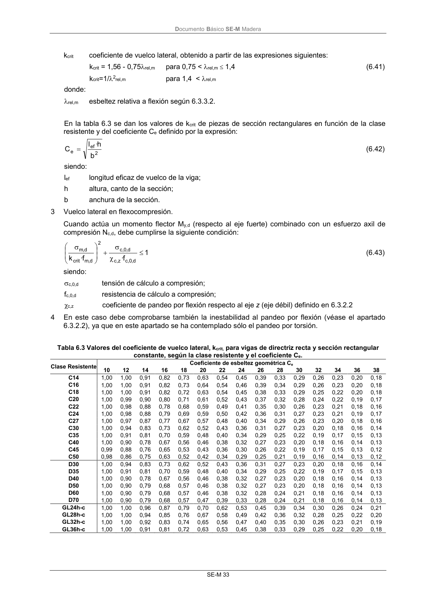

DB-SE-M Madera · edición 2019-12-20 · capa oficial
Documento DB-SE-M-oficial · SHA-256 del PDF 26b5819839ebfda78b0b119c5e76a0a37773b0d763c05688541870075df93718
Copia fiel del PDF fuente · Fuente oficial
Ficha de la disposición en la fuente oficial
Formatos: JSON del segmento · Markdown
6.3.3.3 Comprobación de piezas de directriz recta y sección constante 1 La comprobación a vuelco lateral no será necesaria en vigas que cumplan la condición rel,m≤0,75 2 Vuelco lateral en flexión simple. Debe cumplirse la siguiente condición: m,d kcrit · fm,d (6.40) siendo: m,d tensión de cálculo a flexión; fm,d. resistencia de cálculo a flexión; DocumentoBásico SE-M Madera SE-M 33 kcrit coeficiente de vuelco lateral, obtenido a partir de las expresiones siguientes: kcrit = 1,56 - 0,75rel,m para 0,75 < rel,m 1,4 (6.41) kcrit=1/2rel,m para 1,4 < rel,m donde: rel,m esbeltez relativa a flexión según 6.3.3.2. En la tabla 6.3 se dan los valores de kcrit de piezas de sección rectangulares en función de la clase resistente y del coeficiente Ce definido por la expresión: 2 ef e b h· l C (6.42) siendo: lef longitud eficaz de vuelco de la viga; h altura, canto de la sección; b anchura de la sección. 3 Vuelco lateral en flexocompresión. Cuando actúa un momento flector My,d (respecto al eje fuerte) combinado con un esfuerzo axil de compresión Nc,d, debe cumplirse la siguiente condición: 1 f· f· k d , 0 ,c z,c d , 0 ,c 2 d , m crit d , m (6.43) siendo: c,0,d tensión de cálculo a compresión; fc,0,d resistencia de cálculo a compresión; χc,z coeficiente de pandeo por flexión respecto al eje z (eje débil) definido en 6.3.2.2 4 En este caso debe comprobarse también la inestabilidad al pandeo por flexión (véase el apartado 6.3.2.2), ya que en este apartado se ha contemplado sólo el pandeo por torsión. Tabla 6.3 Valores del coeficiente de vuelco lateral, kcrit, para vigas de directriz recta y sección rectangular
